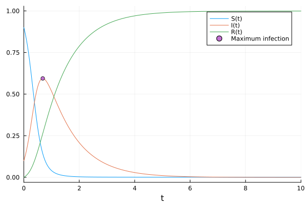

First, let's load all the libraries and define the simple SIR model in AlgebraicPetri.jl.
using EasyModelAnalysis
using UnPack
using AlgebraicPetri
using AlgebraicPetri.Epidemiology
using AlgebraicPetri.BilayerNetworks
using Catlab
using Catlab.CategoricalAlgebra
import Catlab.CategoricalAlgebra: migrate!
using Catlab.WiringDiagrams
using Catlab.Programs.RelationalPrograms
# Define SIR Model
sir = @relation (s, i, r) begin
infection(s, i)
recovery(i, r)
end
# Convert to Epidemiology petri net
psir = apex(oapply_epi(sir))
# Create empty bilayer network
bnsir = LabelledBilayerNetwork()
# migrate petri model to bilayer network
migrate!(bnsir, psir)
AlgebraicPetri.BilayerNetworks.LabelledBilayerNetwork with elements Qin = 1:3, Qout = 1:3, Win = 1:3, Wn = 1:3, Wa = 1:3, Box = 1:2
Then, we can use ODESystem to convert the Petri net to an ODESystem and all the analysis functionalities would follow naturally.
sys = ODESystem(bnsir)
@unpack S, I, R, inf, rec = sys
prob = ODEProblem(sys, [S => 0.9, I => 0.1, R => 0.0], (0, 10.0), [inf => 7.0, rec => 1.0])
sol = solve(prob)
tmax, imax = get_max_t(prob, I)
plt = plot(sol)
scatter!(plt, [tmax], [imax], lab = "Maximum infection", leg = :topright)
